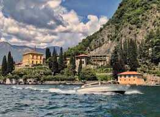
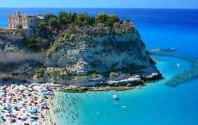
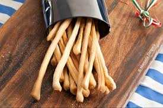
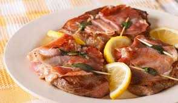

The Photographer
From the mountains and hilltop towns to the cities and ancient ruins, Italy is a country brimming with picture possibilities. Add to this the sights along the Mediterranean Coast, the pastoral landscape of Tuscany, and iconic structures like the Colosseum or Leaning Tower of Pisa, and it's easy to see why photographers can't get their fill of this country. Stir your imagination with our list of the most beautiful places to photograph in Italy.
Places to visit
Pompeii
Photographing the archeological site of Pompeii takes a bit of planning. The site is large, has almost no shade, and can be hot. Try to arrive first thing in the morning and plan your route. Interesting things to photograph include the ancient frescoes, streets with chariot tracks grooved into the stone, and human remains.The main gateway city for visiting Pompeii is Naples, another city with many worthwhile attractions.
Lake Como
Lake Como is a spectacular lake high in the Italian Alps. Photograph the deep blue lake against the backdrop of the mountain scenery. One of the best ways to capture the beauty of Lake Como is from one of the ferries plying regular routes on the lake. Options include motorships, fast ferries, and regular ferries.
Amalfi Coast
The towns along the Amalfi Coast cling precariously to the steep mountainsides. Pull out areas along the scenic and twisty road connecting the towns offer opportunities to stop and photograph this beautiful region. For pictures of the towns themselves, you'll need to get out on the sea and shoot towards land. Take one of the inexpensive ferries that go from town to town or, if you have a large group, charter a boat.
Popular towns along the Amalfi Coast are Positano, Amalfi, Ravello, Maiori, and Minori. Positano is arguably the most photogenic town along the coast. Ravello, home to some fantastic gardens, is set up high and offers beautiful views over the sea.
The Roman Forum
If you are exploring Rome, you will undoubtably come across the Roman Forum. This vast area is full of fantastic structures to photograph. Several of the best sites are the Temple of Antonio Pius dating from AD 141, the Arch of Septimius Severus from AD 203, and the expansive House of the Vestals.
Things to do



Experience Siena's Palio
Twice during the summer, on July 2 and August 16, the beautiful medieval city of Siena erupts into a frenzy over the bare-back horserace that has circled its main square.The large, sloping Piazza del Campo is filled to capacity with partisans cheering wildly for one of the 10 horses, each representing a contrada, the rival neighborhood associations that sponsor the contestants.
Besides the race around the square, the day is filled with pageantry and color: parades, flag-throwing demonstrations, knights in full armor, bands, and colorful medieval costumes.
Tour Lake Como by Boat
The most beautiful lake in Italy's Lake District, Como is surrounded by steep mountain slopes covered in lush greenery and dotted with compact towns and magnificent villas.
A tour of the lake on the lake steamers that act as passenger ferries between towns, as you pass the stunning villas and manicured gardens that surround them, is definitely one of the top things to do in Italy.
Go to the Beach
Surrounded by water, Italy has a lot of coastline, and some of the finest beaches in Europe, from miles-long stretches of white sand to tiny secluded coves hidden by spectacular cliffs.
In August, it seems as though everyone in Italy heads to the popular beaches of Viareggio, Sanremo, Rimini and the other resort towns on the Adriatic and Mediterranean lor islands like Sardenia, Sicilia, Maddalena Islands etc. Those long strands are literally umbrella to umbrella, and you'll have to rent one and its patch of sand from the hotel or resort that owns them. It's a slice of Italian life like no other, as much a social scene as it is about the sand and sea.
Where to stay
Mario de' Fiori 37 Rome, Italy
This nine-room townhouse hotel – the junior partner of the Rome Luxury Suites family – at the heart of the Spanish Steps fashion shopping district offers stylish accommodation for independent travellers who don’t require room service at the press of a button.
Borgo Santo Pietro Chiusdino, Tuscany, Italy
This romantic luxury country house hotel in a little-visited corner of Tuscany is one of Italy’s great boutique retreats, with a Michelin-starred restaurant, acres of verdant grounds and a remit for self-sufficiency that even extends to its spa and bath products.
Hotel Santa Caterina Amalfi, Amalfi Coast, Italy
A mix of familial warmth, glamour and professionalism makes Hotel Santa Caterina stand out from the competition. Now run by the fourth generation of the family that opened it as a hotel in 1904, it’s the sort of homely yet sophisticated place that you long to return to.
Booking.com loves Italy! How about you?
More choices, more destinations.
What to eat
Grissini
Grissini are the long, thin, crisp, breadsticks, usually brought with the bread basket in Italian restaurants. They can be flavored with various sesame seeds, herbs and spices. They originated in Piedmont, but are now common everywhere in Italy and even abroad. Quality-wise they can vary from the pre-made and -packed standardized breadsticks to home-made as a signature pre-meal snack.
Bruschetta
A classic Italian appetizer or pre-appetizer, usually seasoned with olive oil and garlic and or olive oil and freshly cut tomatoes. One of the simpliest dishes and colorful, so people like to take a photograph before they taste it.
Saltimbocca
Saltimbocca alla Romana, as the name indicates, is a typical Roman dish that has become popular around the world. It is a type of open involtino (roulade) consisting of veal stuffed with prosciutto and sage, sauteed in butter with a bit of white wine. The mixture of butter and wine in which the saltimbocca is being cooked later serves as sauce for the dish.
